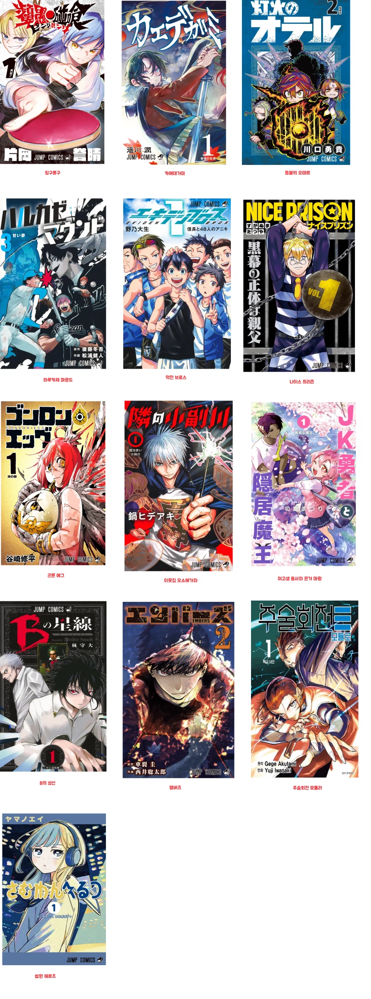
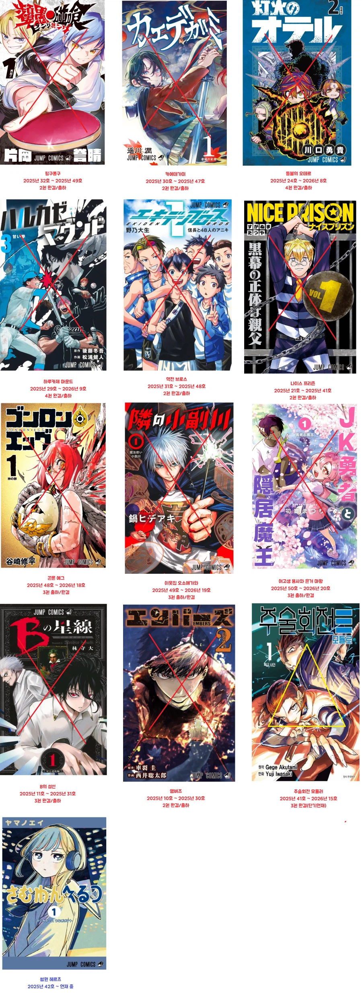

애초에 단기연재였던 주술회전 모듈러를 빼면
하나 빼고 전부 5권도 못가고 사망하고 출하처리됨.


애초에 단기연재였던 주술회전 모듈러를 빼면
하나 빼고 전부 5권도 못가고 사망하고 출하처리됨.
매번 이렇잖아. 장기연재 가는건 손에 꼽으니까 명작인거지
분명 포텐 있는 작품은 있을텐데
점프 플러스가 똥받이 좀 해주는 식으로 가면 안되나
2권 완결은 ㄹㅇ 우리들은이제부터야 엔딩인가
예시 하나 들자면 갑자기 최종보스가 주인공 앞에 나타나더니 최종장에 나올 법한 세계관과 관련된 이야기들을 풀고 치고 박고 싸우다가 과정 생략되고 '이겼다 끝!' 이렇게 남.
소드마스터 야마토가 단순한 우스갯소리가 아님 ㅋㅋㅋㅋ
요즘은 그게 인기라던데
마남이치 랑 그 요도 칼 부러뜨리러가는거
요도브레이커
마남이치는 솔직히 왜 출하 안되는건지 의문이고
카구라바치는 액션씬 개잘만들어서 괜찮은데 슬슬 존나 지루하고 현학적인 파트 질질 끌기 중임
물론 위에 나온것들은 싹다 마남이치만도 못하긴 함...
모듈러는 잘만듦
저중에 등불 오테르 작가는 가망이 없어서 아마 그만둘듯? 습작 꺼낸거 100% 전부 출하당햇지 않나
연쇄출하마임 ㅋㅋㅋㅋㅋ
언제나 그렇잖아?
5권까지는 간 사무라이 8은 사실 대단했던 게 아닐까?
마사시 이름값이 있긴 했지만 아무튼 쟤네보단 오래 갔단 거잖아. 굉장하네!
그건 진짜 작가 이름값때문에 끝까지 믿어본거임 ㅋㅋ
일본만화판 호프임 이름값이랑 비주얼만 개쩜
다 뻔해서 보기싫다 지겹다
아니내공룡이
못보던 만화들이다 했더만 그럴만 했네
주술회전 모듈러가 작화도 좋고 스토리도 좋더만
오테르가 연중이라니
연재하기도 빡셀텐데 그 안에서 살아남기는 또..
연재 빡세기도 하고 작가 컨디션 유지나 매니저 관리가 쉽지않을듯
썸원헤르츠 재밌음. 근데 등불의오테르 1화 극찬받지않았나? 연중당했음?
그림 잘그리고 괜찮은데 서사는 솔직히 그냥 너무 뻔해서 매력이 없었음
그리고 개같이 출하
이 작가 지금까지 내논거 싹다 출하
웹툰은 출하가 없냐? 웹툰작가들은 무슨 거의 평생직장마냥 스토리 질질 끌고 계속 연재하는거같어
최강전설 강해효 이새끼는 핫도그때부터 정신 못차리더니
웹툰판에서도 저 지랄하고있잖아
김성모 웹툰 갑자기 끝나던데
그 사람은 거의 모든 작품이 그럼
연재 대여섯개 한번에 하다가 대충 인기식으면 바로 사시미하고 다 뒤짐
출하 있지...막화쯤에 별점 테러난 완결작은 보통 출하된 작품임
출하 안되는건 나름 인기가 있다는거
와.. 별 이상한 웹툰들 몇년을 연재하던데 나름 인기가 있어서 연재가 되던거구나
점프는 종이잡지라서 한 권에 게재할 수 있는 작품의 수에 제한이 있기에 가차없이 잘라야 하지만 웹툰은 그런게 아니잖슴.
웹툰과 만화 연재의 차이임.
만화 잡지는 주간마다 연재작들 1화씩 실어놓은 걸 파는데, 작품 수가 많을수록 나빠짐. 그러니까 인기가 안 되는 것들은 빨리 쳐내야 함.
하지만 웹툰은 인기 없는 것들 안고 있어도 불이익이 크지 않음. 인기 없으면 하위권에 쳐박혀서 보이지도 않음. 출하엔딩 수준으로 끝나는 건 작가 입장에선 하위권에 쳐박혀 썩느니 신작으로 재도전하는 게 나아서 정리하는 걸 거임.
네이버 웹툰은 조금 다름. 회차당 고료를 주거든... 팔리지 않아도 주는 거라 다들 네웹 가고 깊어하는 거
다음웹툰 일상툰 같은것들은 아예 20회? 30회씩 계약하는지
작가들이 20회 끝나고 '여러분의 성원 덕분에 재계약이 성사되서 계속 연재할 수 있게 되었습니다~~~' 하고 대놓고 만화나 중간중간 후기에 그리던데 ㅋㅋㅋ
그야 잡지는 쪽수 제한이 있지만 웹은 단 한명이라도 결제하면 안 걸어둘 이유가 없으니까 관리를 안하는 거지
웹툰이 저쪽이랑 비교 안되게 널널함
저쪽이 출하율이 80%라고 한다면
웹툰계는 출하율이 10%도 안됨
웹툰도 주기적으로 출하시켜서 수질관리좀 해야되는데
ㄹㅇ 조회수 올라서 위로 올라오더니 갑자기 존나 질질끌고 스토리 존나 늘려놓는거 개띠꺼움
탁구 만화는 주기적으로 나오던데 일본에서 탁구만화가 인기가 있나?
블루오션이라 생각해서 그러는건가?
아무래도 탁구 인구가 좀 되니까 그걸로 가는게 아닐까 싶음 동네 한두개씩은 탁구클럽이 있으니까
요즘 살아남은 소년만화 하면
가치아쿠타랑 카구라바치 말고는 모르겠네
요즘 시대는 장기 빌드업하기 힘든것도 문제인듯
난 헌터헌터 초반은 진짜 개미편 몰랐으면 찍먹도 안해봤을듯
썸타는 소재 만화들 유독 남자가 개찐따 냄새나서 안봤었는데
썸원 헤르츠는 둘다 넘 귀여움
역량부족인건가
일본 망가 점유율 카카오랑 네이버 웹툰에 먹혀버림ㅋㅋㅋ
점프에서 살아남으려면 존나 강해야되기 때문
썸원 헤르츠는 뭔데 살아남음?
작화 왤케 다 촌스럽지
모듈러 꿀잼이었는데 5권까지만 연재하지 3권은 설정이나 스토리 진행하기 너무 빡빡해서인지 너무 보자기 빨리 싸매는 느낌으로 엔딩남
그게 처음에 권수까지 계약한거라 그렇다던데
ㅇㅇ 그래서 그 권수를 5권정도로 했음 좋았을걸
일만 고점이 높긴한데 평균은 요즘 한만이 더 나은거 같기도 함
그림체가 별론데 스토리가 못받춰줬나보네
하나도 본 적 없는 거라서 나도 이제 늙었구나 했는데
다 하늘나라 갔구나